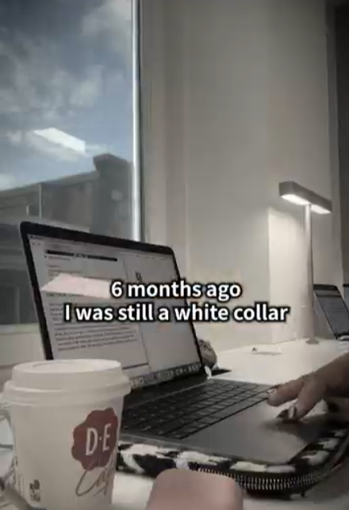

Embracing the Journey: How Rachel Swapped Cubicle Life for Creative Freedom and Pure Joy

Life transitions often begin with a quiet realization: true fulfillment comes from aligning our daily efforts with what genuinely lights up our soul. Stepping beyond comfortable boundaries paves the way for inspiring personal growth.
Six months ago, Rachel was working as a corporate professional, spending her days seated at a desk with her trusted laptop and a warm cup of coffee. While she valued the discipline and experience gained in her white-collar role, she secretly dreamed of building something uniquely her own.
1. Laying the Foundation for Positive Change
Taking the leap toward creative independence requires courage, planning, and a steadfast belief in one's potential:
Building Skills Steadily: Dedicating quiet hours to learning new digital crafts creates a strong bridge to independence.
Embracing Mindful Focus: Treating every project with curiosity turns daily work into an enjoyable personal evolution.
Trusting the Process: Knowing that meaningful transformation takes patience builds lasting resilience and optimism.
2. The Unstoppable Joy of Following Your Dreams
Fast forward half a year, and Rachel's world has transformed completely. By stepping into independent creative work, she unlocked a level of vitality and creative freedom she had only ever imagined.
Looking at her recent achievements today, an radiant smile lit up her entire face. The genuine, beaming joy in her eyes reflected the beauty of honoring her passions and celebrating how far consistent effort can take you.
“When you dare to follow your true passions, every morning starts with enthusiasm and every milestone feels like magic.”
Her uplifting transformation stands as a heartwarming reminder that taking a chance on your dreams leads to extraordinary happiness and lifelong fulfillment.
Every step taken toward your dreams fills life with vibrant color and purpose. By staying true to your values and embracing fresh possibilities, you create a story worth celebrating every single day.